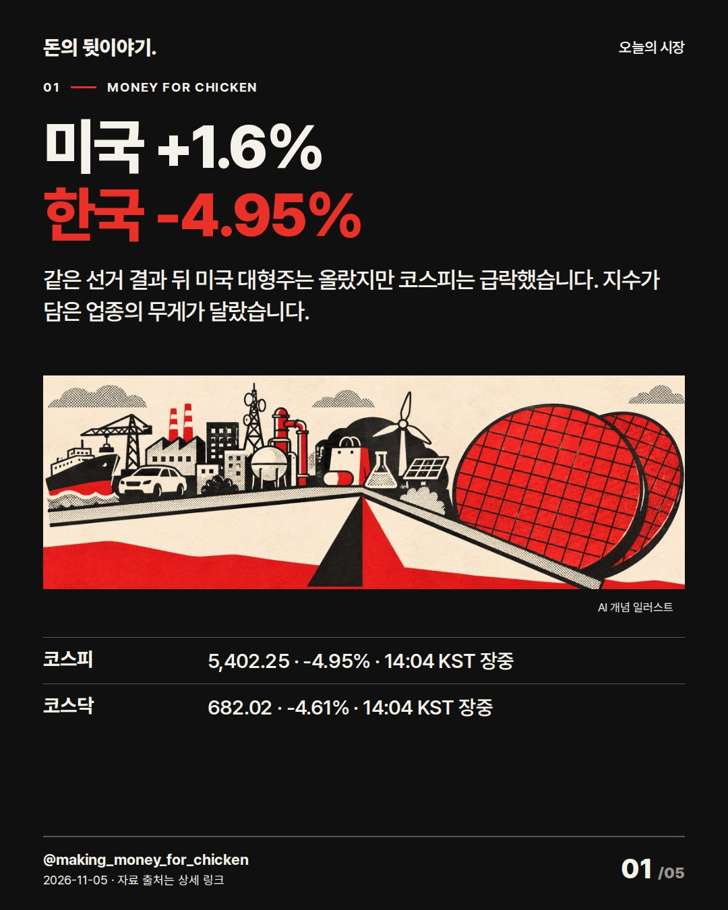
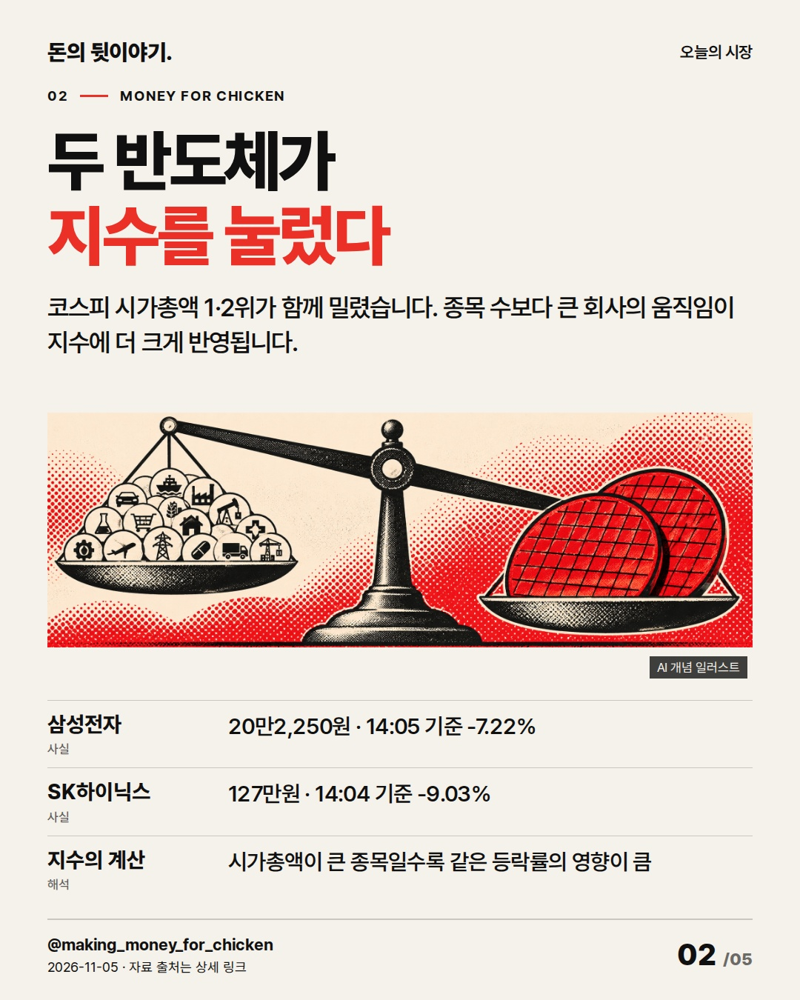
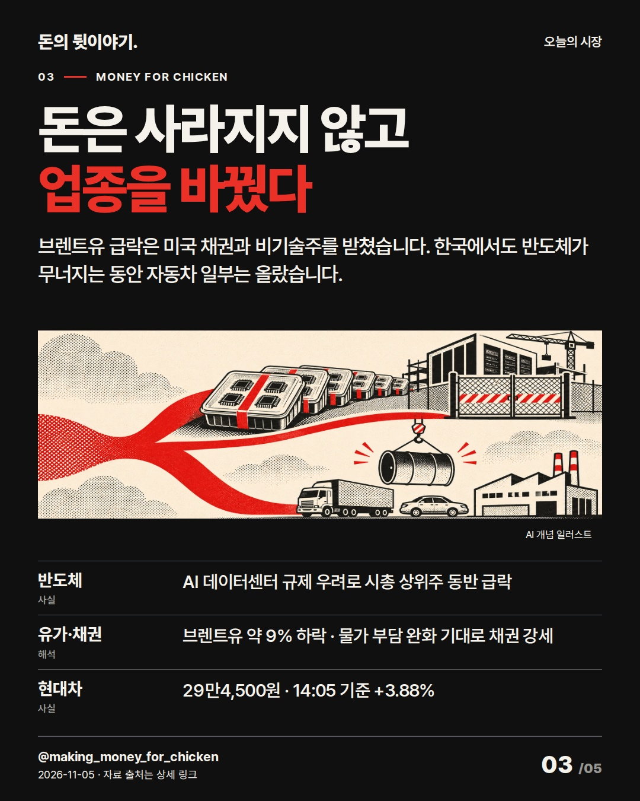
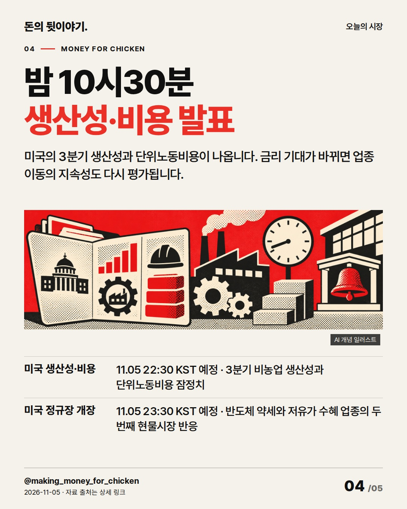
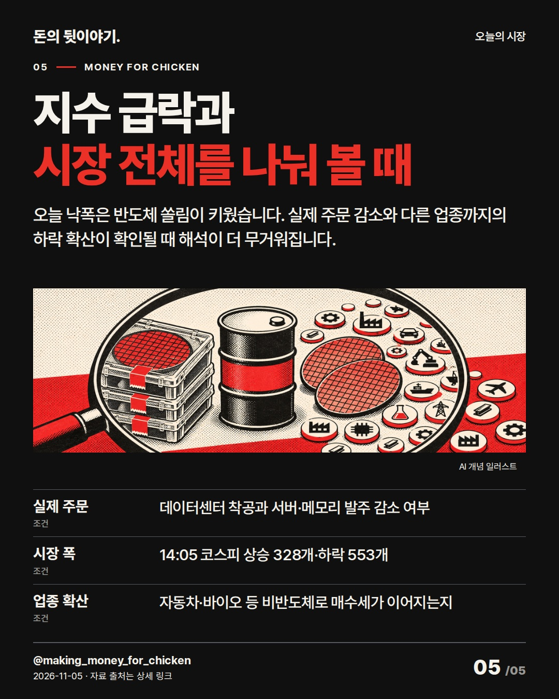

미국 S&P500은 1.6% 올랐지만 코스피는 오후 2시 4분 4.95% 내렸습니다. 같은 뉴스도 지수 안에서 무게가 큰 업종에 따라 전혀 다르게 보입니다. #코스피 #반도체 #미국증시

같은 선거 결과 뒤 미국 대형주는 올랐지만 코스피는 급락했습니다. 지수가 담은 업종의 무게가 달랐습니다.
AI 생성 개념 일러스트 · 실제 현장이나 공식 제품 사진이 아닙니다.

코스피 시가총액 1·2위가 함께 밀렸습니다. 종목 수보다 큰 회사의 움직임이 지수에 더 크게 반영됩니다.
AI 생성 개념 일러스트 · 실제 현장이나 공식 제품 사진이 아닙니다.

브렌트유 급락은 미국 채권과 비기술주를 받쳤습니다. 한국에서도 반도체가 무너지는 동안 자동차 일부는 올랐습니다.
AI 생성 개념 일러스트 · 실제 현장이나 공식 제품 사진이 아닙니다.

미국의 3분기 생산성과 단위노동비용이 나옵니다. 금리 기대가 바뀌면 업종 이동의 지속성도 다시 평가됩니다.
AI 생성 개념 일러스트 · 실제 현장이나 공식 제품 사진이 아닙니다.

오늘 낙폭은 반도체 쏠림이 키웠습니다. 실제 주문 감소와 다른 업종까지의 하락 확산이 확인될 때 해석이 더 무거워집니다.
AI 생성 개념 일러스트 · 실제 현장이나 공식 제품 사진이 아닙니다.
{
"improvement": "최근 5편은 기업 실적·수출·AI 규제의 방향을 설명했지만 지수 안의 무게 차이는 비어 있었습니다. 이번에는 미국 +1.6%와 한국 -4.95%의 엇갈림을 먼저 보여주고, 두 반도체 대형주가 한국 지수에 더 큰 힘을 주는 구조를 한 축으로 설명했습니다.",
"reason": "불스토리 공식 글 본문 전체는 반도체 반등만 보지 말고 다른 업종으로 매수가 퍼지는지 묻는 순서를 썼고 Instagram 카드는 보지 못했습니다. 홍춘욱 공식 글 전체는 ‘지수는 오르는데 내 계좌는 왜 다른가’라는 독자 고민에서 쏠림 위험으로 이어갔습니다. Morning Brew 글 전체는 코스피의 반도체 집중을, CNBC 글 전체는 S&P500의 더 넓은 업종 구성을 설명했습니다.",
"application": "초안 ‘미국은 올랐는데 한국은 왜 폭락했나’→퇴고 ‘미국 +1.6%, 한국 -4.95%’로 답을 표지에 넣었습니다. 2장에 삼성전자 -7.22%·SK하이닉스 -9.03%를 배치하고, 3장에서는 유가 하락이 미국 채권·비기술주를 받친 경로와 현대차 +3.88%를 분리해 설명했습니다.",
"avoided_repetition": "11/4의 선거→규제→데이터센터 허가 설명과 주문 취소 여부는 반복하지 않았습니다. ‘불확실성 확대’ 대신 지수 구성·시장 폭·실제 주문이라는 구체 기준을 썼고, 같은 하락 결론을 title/body/items에서 되풀이하지 않았습니다. 반응 지표는 미확보이며 다음 편은 지수와 상승 종목 수의 엇갈림을 더 짧게 보여줍니다."
}투자 참고용 · 매수·매도 권유 아님.